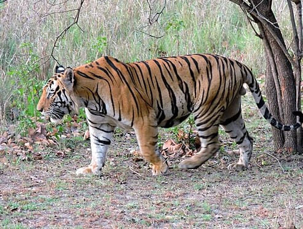
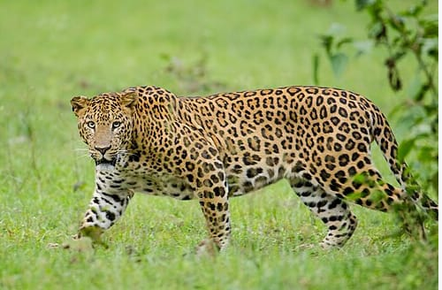
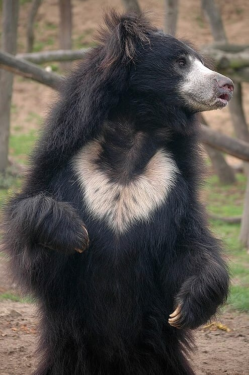
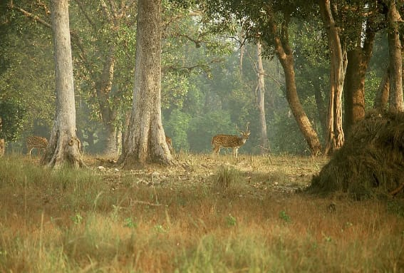
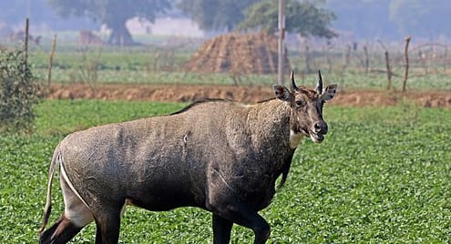
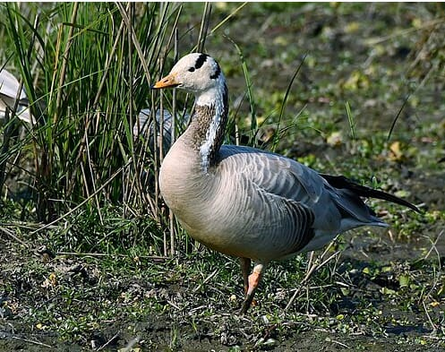
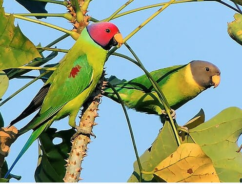
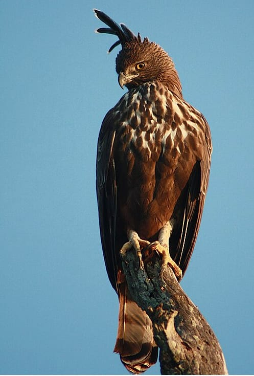

Panna National Park is an Indian national park in Panna and Chhatarpur Districts of Madhya Pradesh with an area of
542.67 km2 (209.53 sq mi). It was declared in 1994 as the twenty second Tiger reserve of India and the fifth in Madhya
Pradesh.Panna National Park was given the Award of Excellence in 2007 as the best maintained national park of India by
the Ministry of Tourism of India. Although the reserve went through an ordeal losing almost all of its tigers in 2009
to poaching, a subsequent recovery program touted as one of the most successful big cat population restorations, has
resulted in a growth of up to 80 tigers within the park.
Among the animals found here are the Bengal tiger, Indian leopard, chital, chinkara, nilgai, Sambar deer and
sloth bear, rusty-spotted cat, Asian palm civet.
Bengal tiger

The Bengal tiger is a population of the Panthera tigris tigris subspecies. It ranks among the largest of wild cats.
It is distributed from India, southern Nepal, Bangladesh, Bhutan to southwestern China. Its historical range
extended to the Indus River valley until the early 19th century, and it is thought to have been present in the
Indian subcontinent since the Late Pleistocene about 12,000 to 16,500 years ago. It is threatened by poaching,
habitat loss and habitat fragmentation.
Indian leopard

The Indian leopard (Panthera pardus fusca) is a subspecies of the leopard (P. pardus). It is widely distributed on
the Indian subcontinent. It is threatened by illegal trade of skins and body parts, and persecution due to
human-leopard conflict and retaliation for livestock depredation.
Sloth bear

The sloth bear (Melursus ursinus), also known as the Indian bear, is a myrmecophagous bear species native to the
Indian subcontinent. It feeds on fruits, ants and termites. It is listed as vulnerable on the IUCN Red List, mainly
because of habitat loss and degradation.[1] It is the only species in the genus Melursus.
Sambar

The sambar (Rusa unicolor) is a large deer native to the Indian subcontinent, South China and Southeast Asia that is
listed as a vulnerable species on the IUCN Red List since 2008. Populations have declined substantially due to
severe hunting, local insurgency, and industrial exploitation of habitat.
nilgai

The nilgai (Boselaphus tragocamelus) (/ˈnilˌɡaɪ/, literally meaning "blue cow") is the largest antelope of Asia, and
is ubiquitous across the northern Indian subcontinent. It is the sole member of the genus Boselaphus, which was
first scientifically described by Peter Simon Pallas in 1766. The nilgai stands 1–1.5 m (3.3–4.9 ft) at the
shoulder; males weigh 109–288 kg (240–635 lb), and the lighter females 100–213 kg (220–470 lb). A sturdy thin-legged
antelope, the nilgai is characterised by a sloping back, a deep neck with a white patch on the throat, a short crest
of hair along the neck terminating in a tuft, and white facial spots. A column of pendant coarse hair hangs from the
dewlap ridge below the white patch. Sexual dimorphism is prominent – while females and juveniles are orange to
tawny, adult males have a bluish-grey coat. Only males possess horns, 15–24 cm (5.9–9.4 in) long.
The park is home to more than 200 species of birds including the bar-headed goose, crested honey buzzard,
red-headed vulture, plum-headed parakeet, changeable hawk-eagle and Indian vulture.
Bar-headed goose

The bar-headed goose (Anser indicus) is a goose that breeds in Central Asia in colonies of thousands near mountain
lakes and winters in South Asia, as far south as peninsular India. It lays three to eight eggs at a time in a ground
nest. It is known for the extreme altitudes it reaches when migrating across the Himalayas.
Crested honey buzzard
The crested honey buzzard (Pernis ptilorhynchus)[3] is a bird of prey in the family Accipitridae, which also
includes many other diurnal raptors such as kites, eagles, and harriers. Pernis ptilorhynchus has six subspecies. As
a medium-sized raptor, their size ranges between 57–60 cm (22–24 in). They are also known as the Oriental, Asiatic,
or Eastern honey buzzard. The name is derived from its diet, which consists mainly of the larvae of bees and wasps
extracted from honey combs.
Red-headed vulture
The red-headed vulture (Sarcogyps calvus), also known as the Asian king vulture, Indian black vulture or Pondicherry
vulture,[2] is an Old World vulture mainly found in the Indian subcontinent, with small disjunct populations in some
parts of Southeast Asia.
Plum-headed parakeet

The plum-headed parakeet (Psittacula cyanocephala) is a species of parakeet in the family Psittacidae. It is endemic
to the Indian Subcontinent and was once thought to be conspecific with the blossom-headed parakeet (P. roseata)
before being elevated to a full species. Plum-headed parakeets are found in flocks, the males having a pinkish
purple head and the females, a grey head. They fly swiftly with twists and turns accompanied by their distinctive
calls.
Changeable hawk-eagle

The changeable hawk-eagle (Nisaetus cirrhatus) or crested hawk-eagle is a large bird of prey species of the family
Accipitridae. More informal or antiquated English common names include the marsh hawk-eagle or Indian crested
hawk-eagle.[3] It is a member of the subfamily Aquilinae, with signature feathers, absent in tropical raptors from
outside this subfamily, covering the tarsus.[4] It was formerly placed in the genus Spizaetus, but studies pointed
to the group being paraphyletic resulting in the Old World members being placed in Nisaetus and separated from the
New World species. It is a typical "hawk-eagle" in that it is an agile forest-dwelling predator and like many such
eagles readily varies its prey selection between birds, mammals or reptiles as well as other vertebrates.[5] Among
the members of its genus, the changeable hawk-eagle stands out as the most widely distributed, adaptable and
abundant species.Individuals show a wide range of variation in plumage from pale to dark, varying with moult and age
giving rise to the name "changeable".
 The crested honey buzzard (Pernis ptilorhynchus)[3] is a bird of prey in the family Accipitridae, which also
includes many other diurnal raptors such as kites, eagles, and harriers. Pernis ptilorhynchus has six subspecies. As
a medium-sized raptor, their size ranges between 57–60 cm (22–24 in). They are also known as the Oriental, Asiatic,
or Eastern honey buzzard. The name is derived from its diet, which consists mainly of the larvae of bees and wasps
extracted from honey combs.
The crested honey buzzard (Pernis ptilorhynchus)[3] is a bird of prey in the family Accipitridae, which also
includes many other diurnal raptors such as kites, eagles, and harriers. Pernis ptilorhynchus has six subspecies. As
a medium-sized raptor, their size ranges between 57–60 cm (22–24 in). They are also known as the Oriental, Asiatic,
or Eastern honey buzzard. The name is derived from its diet, which consists mainly of the larvae of bees and wasps
extracted from honey combs.
 The red-headed vulture (Sarcogyps calvus), also known as the Asian king vulture, Indian black vulture or Pondicherry
vulture,[2] is an Old World vulture mainly found in the Indian subcontinent, with small disjunct populations in some
parts of Southeast Asia.
The red-headed vulture (Sarcogyps calvus), also known as the Asian king vulture, Indian black vulture or Pondicherry
vulture,[2] is an Old World vulture mainly found in the Indian subcontinent, with small disjunct populations in some
parts of Southeast Asia.